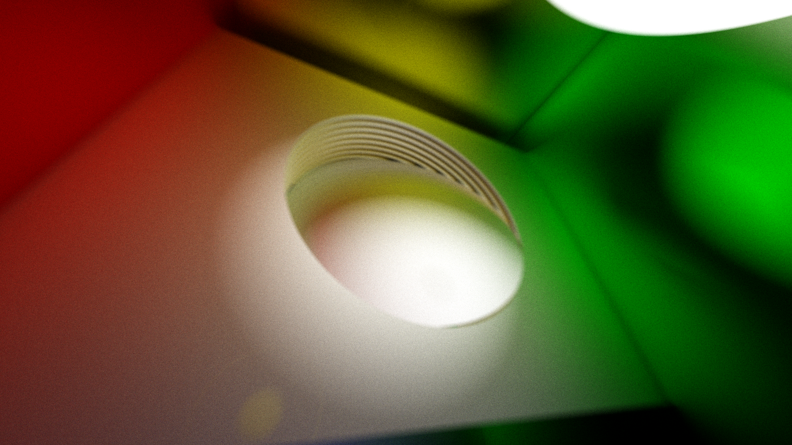

GPU SDF Pathtracing
This project is a continuation of my work with signed distance fields (SDFs). It is a relatively natural extension from what I was doing in the Dithered Raymarching project. The SDF representation is globally accessible, e.g. in every shader invocation, and plays very well with the parallel nature of the GPU. By making use of this global access to both geometry and normals, some very cool effects can be modeled.

You can see in some of the images there are significant global illumination effects, where indirect lighting has created interesting color bleed between neighboring objects. Additionally, you can see some depth of field (DoF) effects, which produce depth-dependent blurs on objects in front of or behind the focal plane. This same effect is responsible for the creation of the circular bokeh which you can see when bright lights are specularly reflected from surfaces towards the viewer.
Overview
The basics of pathtracing are not complicated - in fact, I think this can be a much more intuitive model than the raster model, as it considers surfaces in a very physical way. The main loop in my program considers two main vec3 components: a throughput_amount and an accumulated_color. The throughput_amount is initialized to 1.0 in each of the three channels, and is attenuated by one minus the surface albedo at each hit. The accumulated_color is initialized to 0.0 in each of the three channels and is incremented by the emissive properties of surfaces that are hit, scaled by the current throughput_amount.

An easy way to understand what is happening here is to consider a very simple model of a diffuse red ball (albedo vec3(1.,0.,0.)) with a box of white emissive material (emission vec3(1.,1.,1.)) surrounding it in all directions. Consider a ray which originates at your eye's location, inside the box. If the ray's first hit is the box, you will simply use the initial value of throughput_amount, times the emission of the white material to get your output pixel of vec3(1.,1.,1.).
Now consider a ray which hits the diffuse red ball. You can see that the throughput_amount will be scaled, such that now only red light can be transmitted. Intuitively, you can start to understand that this surface only reflects red light. When the ray now bounces and hits your white emissive box, you will only ever get signal in the red channel. You can see a similar effect above, with a purely blue surface - note that when other colors are present in your scene, this can be visually confusing, as you can see there is no red or green light reflected.
This same behavior is propagated over several bounces, until a final color is reached. More bounces will give more chances to hit emissive materials, etc, but more than bounces can become very expensive to evaluate per sample. I am using an optimization called 'russian roulette' which introduces a stochastic chance to terminate early if it sees that the value of one of the channels of throughput_amount drop low enough. There is a little more to this method, which you can read about towards the bottom of the page here.
Depth of Field
This effect is achieved via the thin lens approximation, which you can read about here. When you generate your view ray, the origin position is jittered inside of a small circle around the pixel center's location. With some consideration of the distance to the focal plane, this gives a nice depth dependent blur which can add a lot to these renders.

There are two parameters for this effect: the radius of the circle we jitter with, and the distance to the focal plane. By increading the radius, the blur becomes more and more intense and increases at a sharper rate as you move away from the focal plane. Correspondingly, if you decrease it, the effect becomes less intense, down to a value of 0, which cancels out the jittering effect and creates a sharp image at the entire range of depth values.

You can see below some interesting interplay between specular materials and the DoF effects - a curved, perfectly mirrored surface towards the back on the right hand side reflects all the scene objects in an interestingly distorted fashion.

Renderer Architecture
This is very similar to the tile based renderer used in the later versions of the Dithered Raymarching project, with a few major changes. Rather than doing a full pass across the screen every frame, a vector of tiles is maintained on the CPU, which acts as a work queue for the GPU. By processing some number of tiles off of this queue, until a time threshold (a few tens of milliseconds) has passed, I can maintain interactivity with ImGUI, even at very high resolutions (4K+, arbitrary up to maximum GPU texture size - this is ~16k pixels square on the driver I'm using). Just for kicks, this vector of tile offsets is shuffled each time it is completed.
On the GPU, the model is very simple. There is a very deep bit depth image (32 bit floating point per channel, RGBA) which is the only state maintained on the GPU. This is done by maintaining a sample count in the alpha channel of this texture. Note that it is neccesary to do it this way rather than maintaining a global counter due to the way that tiles are processed. This sample count is incremented each time a sample is completed, and is used to average the current color sample with the running sample average, using some very simple logic - mix(old, new, 1/count). You can zero out state by writing a 1 to the alpha channel - the third parameter, which controls the mix between the first two terms, will be 1/1=1 and you will be writing only the new value back. Alternatively, you can zero the entire texture buffer from the CPU, but this ends up being a lot more work than you have to.
Materials
Diffuse materials are the simplest to implement - they only need to know the surface normal in order to be calculated. The outgoing ray will be made to go in a completely random direction off of the surface. There are different ways to do this, but the method I'm using uses the normalized result of random unit vector added to the normal, with a small bump by epsilon to keep it above the actual surface that it hits. You can see below, the material starts to look like unglazed clay, terra cotta, or some kind of material like that.

Specular materials require the computation of the reflected vector. This is done by reflecting the incoming vector about the surface normal at the hit location. My specular material averages this reflected vector with the same ray generation algorithm as the diffuse material, weighted by a sort of roughness parameter. You can see in some of the images on this page, the reflections are not perfectly specular (e.g. there is some blending of these two vectors), and in fact create their own bokeh as the rays diverge off of the surface.

Emissive materials are the only sources of light in the scene right now. The pathtracing algorithm is very flexible in this regard - I can make arbitrarily shaped lights by simply giving an SDF an emissive material, or use a simpler model like a point light. Once you get into more advanced topics like importance sampling, etc, this obviously becomes more complicated, as you cannot easily generate points on this light source. It creates some interesting results in this implementation, though. You can see them turned way down in the picture below, where the emissive materials are directly visible. Nearby bounces on the surrounding diffuse material have a higher chance to hit the emissive material (think: it takes up more of the horizon) which creates an effect very similar to the inverse square law. The energy of the ray is conserved between bounces, not scaled by distance. Much like global illumination, you can see that this effect is created with no explicit consideration of the inverse square law.

Future Directions